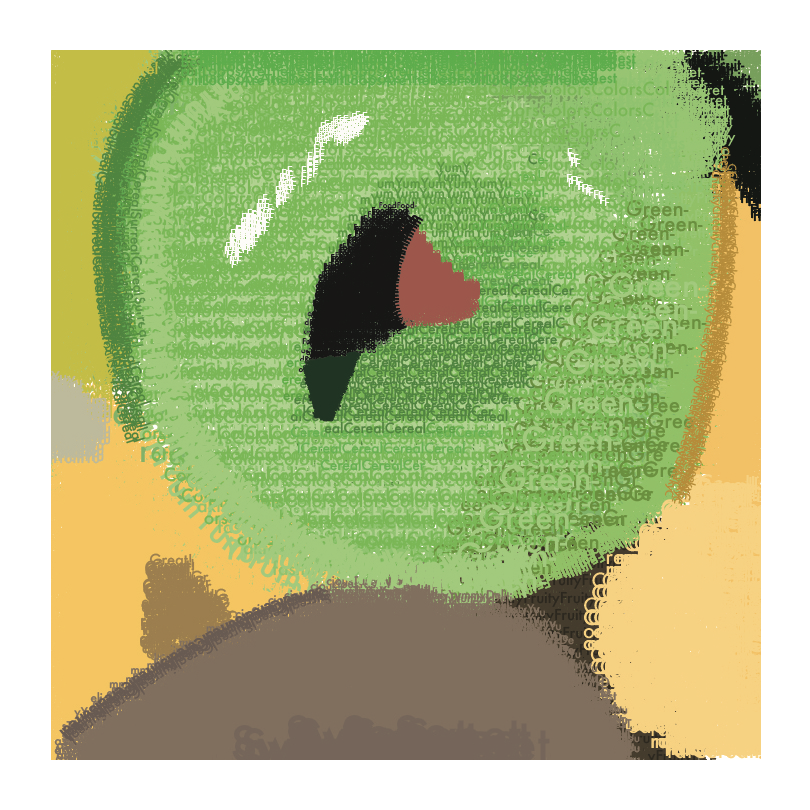

Froot Loop



For this project, we were told to take a picture and recreate it with adjectives to describe it. At this time, I was very into Froot Loops, and I love its many colors, so I took on the task of recreating a Froot Loop out of text. This project was very challenging, but in the end, I think it was fairly successful.


For my next series, I decided to combine similar VCD Projects. This series once again utilizes type, but instead of creating a picture out of type, I contrast the words 'thick and thin,' create a saxophone out of the letter 'S,' and I create a unique pattern to depict the phrase, 'Stay Weird.'